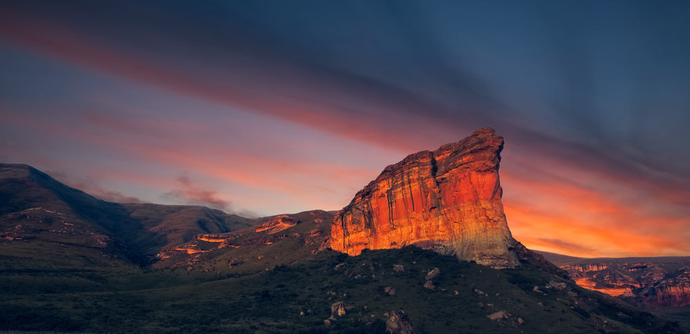

Explore South Africa's National Parks
Discover breathtaking landscapes, amazing wildlife, and unforgettable adventures across South Africa.
Explore ParksWelcome
South Africa is home to some of the world's most spectacular national parks. From the famous Big Five to beautiful mountains and coastlines, every park offers a unique experience for nature lovers.
Featured National Parks
Travel Tip
Why Visit South Africa?
Wildlife
See lions, elephants, rhinos, buffaloes, and leopards in their natural habitats.
Nature
Explore forests, mountains, deserts, wetlands, and coastlines.
Adventure
Enjoy hiking, game drives, bird watching, camping, and photography.